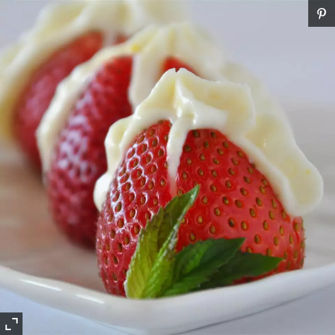

Stuffed Strawberries

Yum, yum! Sometimes I add some finely chopped semi-sweet chocolate. These are perfect for
baby showers or wedding showers. A plastic sandwich bag can be used instead of a pastry bag
by filling with the cream cheese mix and making a tiny cut in the corner.
Ingredients:
- 1 pint fresh strawberries
- 250g cream cheese, softened
- 1/2 cup confectioners' sugar, or to taste
- 2 Tbs orange flavoured liqueur, or to taste
Directions:
-
Cut the tops off of the strawberries and stand upright on the cut side. Make a cut 3/4 of the way down from
the tip of the strawberry towards the bottom.
-
Beat together the cream cheese, sugar, and liqueur until smooth in a mixer or a food processor. Place into
a piping bag with a star tip. Pipe into each strawberry and arrange on a serving platter.
Nutrition Facts:
Per Serving: 310 calories; protein 4.8g; carbohydrates 27.1g; fat 19.8g; cholesterol 61.6mg; sodium 167.3mg.